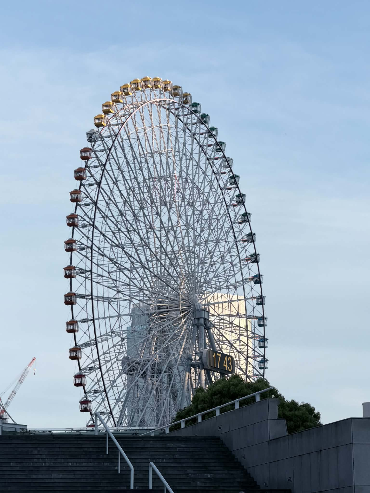
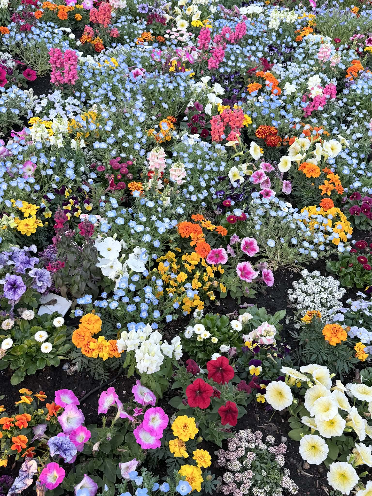

トップページ
このWebサイトでは、横浜旅行で自分が撮影した写真を使い、 街の雰囲気や海の景色、夜景、旅行中に見つけた小さな思い出を紹介します。 横浜の涼しくて現代的な雰囲気を感じられるように、青を中心としたデザインにしました。
Yokohama Blue Journey
この旅で見た横浜は、青い夜景、海の風、港の広さが印象的な場所でした。 にぎやかな街の中にも落ち着いた空気があり、 歩きながら写真を撮る時間がとても楽しかったです。
このサイトでは、横浜で見つけた景色や思い出を、 自分の写真と一緒に一つずつ紹介していきます。
Trip Highlights

City Icon
みなとみらいの大きな観覧車は、横浜らしい印象的な風景でした。

Harbor View
海と船、赤レンガ倉庫が見える景色から、港町らしい雰囲気を感じました。

Seaside Moment
海辺では多くの人が集まり、横浜の明るく楽しい空気を感じることができました。
Journey Mood
横浜旅行の中で感じた、夜景、港、街の色、花の雰囲気を写真でまとめました。

